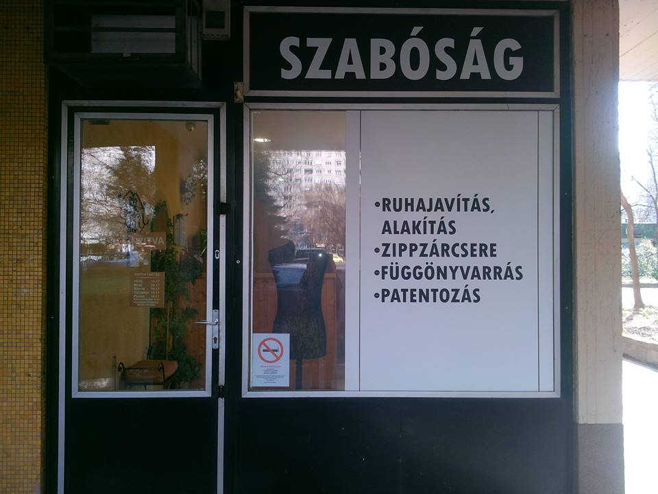

Tél
élénk–sötét
Nagyból kicsit – kicsiből nagyot alkotni, mi ez, ha nem művészet.
Ötlettárunk majdnem kimeríthetetlen!
Ha megtetszik egy új ruha, vagy a régi kedvenc ruhádat megváltoztatnád, jussunk eszedbe: kívánság szerint lehet hozzáadni, elvenni, alakra szabni, megjavítani.
Ha van elképzelésed, amihez tű, cérna és szaktudás kell, megtalálsz minket. A megvalósításra váró ötleted számunkra kihívás.
2000 óta működő III. kerületi óbudai üzletünkben szeretettel várjuk leendő és új ügyfeleinket.
Személyre szabott szolgáltatással, elégedettségi garanciával.
Fő profilunk a méretre igazítás, a ruhajavítás és az alakítás.
Bőrünk, szemünk és hajunk színe összhangban van. Ha a ruháinkat és a sminket ehhez igazítjuk, időt és pénzt spórolunk vásárláskor. Színes kendős színanalízissel meghatározzuk az évszaktípusodat:
élénk–sötét
élénk–világos
tört–világos
tört–sötét
Árainkból – a végső ár a munkától függ.
| Nadrág felhajtás | 1950 Ft-tól |
|---|---|
| Nadrág cipzár csere | 2500 Ft-tól |
| Szoknya cipzár csere | 2700 Ft-tól |
| Fürdőruha átalakítás | 3500 Ft-tól |
| Karcsúsítás, szűkítés | 2500 Ft-tól |
| Függönyvarrás | 550 Ft-tól / méter |
Kérdés esetén hívj: 06-20-375-5366
Szeretettel várjuk üzletünkben.
Címünk: Budapest III. kerület, Óbuda, Miklós utca 9.
Nyitva: Hétfő–Péntek 10:30–17:00 | Egyeztetéssel 17:00–20:00
Tel: 06-20-375-5366

Munkatársat keresünk óbudai üzletünkbe.
Kreatív szakmáját szerető varrónőt keresek változatos munkára.
Fő profil ruhaigazítás Óbudán.
Jó kereseti lehetőséggel.
Szakmai fényképes önéletrajzot: felvarrjuk@gmail.com